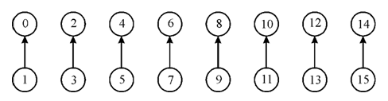
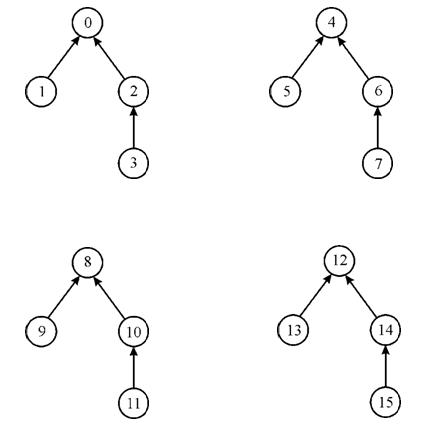
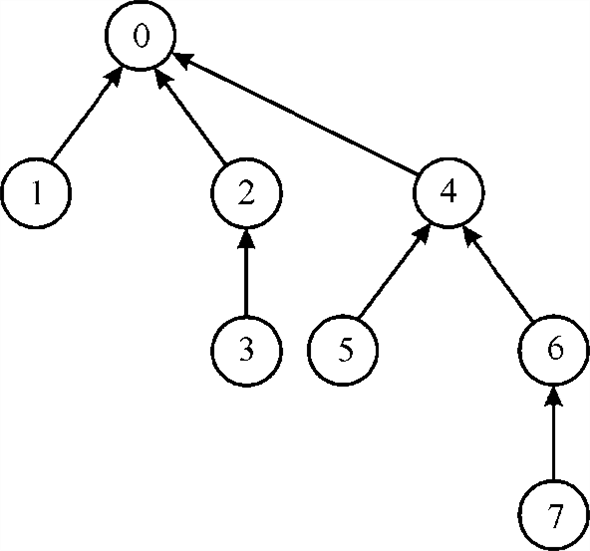
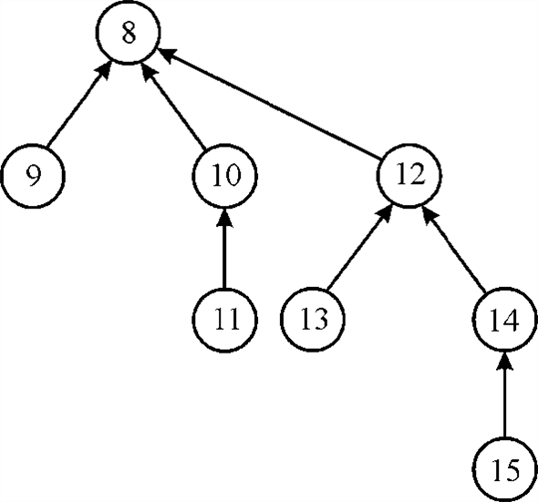
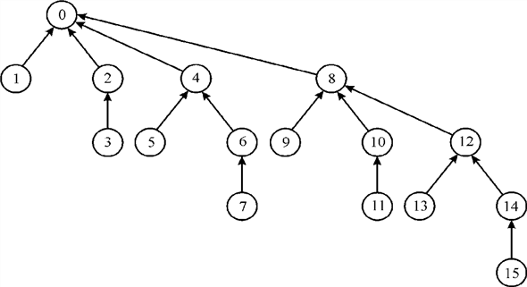

Proving the Lemma 21.4
The Lemma 21.4 can be proved by using UNION, MAKE-SET and FIND-SET, and performing induction on a number of operations.
The following are the pseudocodes for the above operations:
// creating a set
MAKE-SET (X)
//find the parent node of node x
1.
//set rank for x
2.
Here, rank is ceiling value of the height of x. Whenever MAKE-SET creates a singleton set (set having only one element), the rank of the tree is set to 0.
// UNION operation in which element of both the sets store in to first set
UNION(x, y)
// performing link operation using the find set operation for both the sets
1. LINK (FIND-SET(x), FIND-SET(y))
// performing link in between the set element according to their rank
LINK(x, y)
//join the roots passed as argument
1. if
//make the node xy’s parent
2.
//make y x’s parent
1. else
//check if both of them have equal rank
4. if
// now rank of the element of set y is incremented by 1
5.
UNION method takes two sets as parameters and by linking these two sets, it forms a new set (tree). UNION makes the new tree as follows:
1. If the ranks of the roots are unequal: The element which has the higher rank will be the parent of another; however, there would be no change in the ranks themselves.
2. If the ranks of the roots are equal: Then any of them is chosen as the parent and its rank is incremented.
// searching for the set
FIND-SET(x)
1. if
2.  =
FIND-SET(x, p)
=
FIND-SET(x, p)
3. return
The procedure of FIND-SET works as follows:
• FIND-SET recursively calls itself to find the root, in line 2.
• When the x equals to x.p, in the line 3, the root is returned.
Applying Induction on number of operations:
Consider the number of operations as n.
Step 1 (base case): when n = 1(single operation)
When MAKE-FIRST is called on x, it creates a tree with single element x as root and sets the rank as 0. Similarly, when MAKE-FIRST is called on y, it creates a tree with y as root and sets rank of the tree as 0. When the single UNION operation is applied on these two sets, it results in a new tree(set) with either x or y as the root. Then the tree contains x and y only.
If x is the root of the new tree, then the rank of x is 1 and the rank of y is 0.
Similarly, if y is the root of the new tree, then the rank of y is 1 and the rank of x is 0.
Step 2 (inductive hypothesis): For n=k (k operations)
When k operations are performed on k nodes, the root node in the resultant tree has the rank k-1and remaining node has the rank less than k-1.
Step 3: when n = k + 1
It is assumed that after k number of operations, the given lemma is true. Now, it is required to show that the given tree is true for k+1th operations.
From the inductive hypothesis, after applying k operations on k elements, a tree is obtained and its root (yk) has the rank at most k-1.
Now consider a tree that contains only one node (xk). Apply one more UNION operation (k+1th operation).
The LINK procedure would either make the node
xk the parent of  or vice
versa. That is, the rank of the xk becomes
k or the rank of the is
increased by 1(that is, k).
or vice
versa. That is, the rank of the xk becomes
k or the rank of the is
increased by 1(that is, k).
In other words, the rank of the remaining nodes in the tree is less than k.
From the above steps, it is clear that the rank of the root is changes for each operation and the rank of the remaining nodes is less than the rank of the root.
Hence, the value of increases monotonically over time.
The concept of union find data structure is driven from the Kruskal’s minimum spanning tree algorithm where two operations are required on the disjoint set of vertices: determine that weather the both vertices (u and v) are in the same set and Union of the disjoint set A and B.
The union find data structure performs the two operation for implementation of the earlier defined two operation:
• Find (v): It return the canonical element of set containing v. Also check that u and v are in the same set by find (u) = find (v).
• Union (u, v): it combines the set of containing the canonical elements u and v.
Rank of Node:
Rank of node is just like the same of the height of the subtree if path compression is not done. If u is not the root of tree then rank (u) would be strictly less than of the rank of u’s parent.
It can be proof by the induction: Union operation preserves this rank property and Find increase the difference between the rank of node and parents.
Rank of node can only change if the u is the root. Once the node used as non-root then it never counted as root again.
Every node has the rank at most with the two heuristics union by the rank and path compression.
It can be proved by induction as following:
The claim:
For a node in the tree with rank r, the size of the sub tree with the node as root will be at least 2r.
Base Case:
A node of the rank zero (0) is the root of subtree which contains itself at least, so the size of it is equal to at least one.
Inductive Case:
• Assume a node X, it can have the rank (r+1) only in one condition if, it had the rank r and it was the root of tree at the previous stage that was joined with another tree which root having rank r.
• Now the X node will be the root of union of two tree. By the inductive hypothesis each tree having at least 2r size and therefore X be the root of the tree of size:
2r +2r = 2r+1.
• Now in the forest, the total number of node is n and having the at least 2r nodes in the every tree with r rank. Therefore,
Hence, for every node in union find algorithm rank will be at most .
Union by rank:
It is a heuristic approach in which two trees are merging on the basis of their rank. The tree which has the larger root node becomes root node after merging.
Consider the MAKE-SET() , UNION() , FIND-SET() and LINK() procedure provided in section 21.3.
• The MAKE-SET() procedure takes  time to
create a tree contain only single node. When m MAKE-SET()
operation is called then total time becomes
time to
create a tree contain only single node. When m MAKE-SET()
operation is called then total time becomes  .
.
• The UNION() procedure is called to merge the trees, which
further call the LINK() and FIND-SET() procedure. The LINK() takes
time to
create a tree contain only single node.
• It is already stated that rank of every node is . The time
taken by each FIND-SET() procedure to find set in tree having
height is
. The time
taken by each FIND-SET() procedure to find set in tree having
height is  .
.
Therefore, m operation of MAKE-SET(), LINK() and FIND-SET() are performed in time .
Professor Dante
In order to justify Professor Dante reasons, consider an example for n = 16, and make these 16’s into separate singleton sets. This has been done with MAKE-SET operation. Then perform 8 UNION operations in order to connect the sets into 8 pairs where each pair has a root with rank 0 and a child with rank 1. This is shown below:
After that use 4 UNION’s to connect pairs of these trees, so that there are 4 trees, each with a root of rank 2, children of the root of ranks 1 and 0, and a node of rank 0 that is the child of the rank–1 node. This can be shown as:

Now, linking the pair of trees together, so that two resulting trees are formed having root of rank equal to 3. Each tree contains a path from the leaf of tree to root of tree having ranks 0, 1 and 3. This can be shown as:


Finally, linking of both two trees will be there. So, that there is a path from a leaf to the root with ranks 0, 1, 3, and 4. Consider x and y be the nodes on this path with ranks 1 and 3, respectively. This can be shown as:

Since, (From the above diagram)
A1(1) = 3, level(x)= 1,
And
A0(3) = 4, level(y) = 0.
Yet y follows x on the end path.
Hence, it is clear from the example given above that Professor Dante’s reason is not correct.
Change the variables such that . Since
for all the values between 0 and 2047, so for all the
values between  . This value
is higher.
. This value
is higher.
Initially, and
.
To prove the improved bound of  , the
general structure will be the same and it is required that
for all the non-roots x with rank[x]
, the
general structure will be the same and it is required that
for all the non-roots x with rank[x]  1. Now,
replace with
by
observing that
1. Now,
replace with
by
observing that
All the subsequent proofs will depend on the previous
observations.